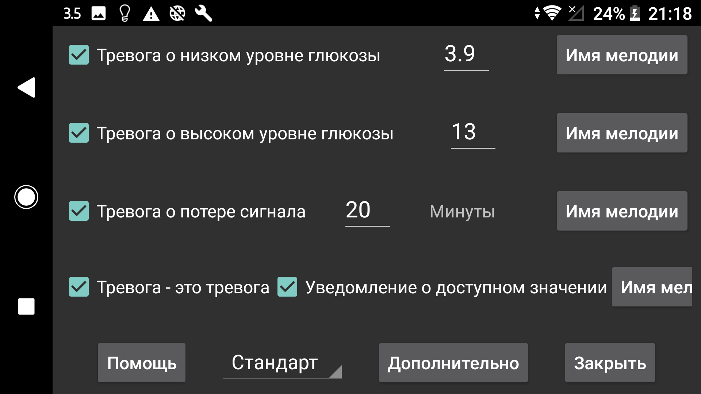

Потоковые значения, полученные по Bluetooth, можно использовать для настройки тревог «Сигнал о низкой глюкозе» и «Сигнал о высокой глюкозе».
Значение, при котором и ниже которого должен срабатывать сигнал тревоги.
Значение, при котором и выше которого должен срабатывать сигнал тревоги.
Укажите, через сколько минут должен сработать сигнал, если по Bluetooth не получено ни одного значения глюкозы.
Сигналы тревоги прекращаются, когда выполнено одно из условий:
Иногда датчик временно перестает работать. Если включить этот параметр, вы получите уведомление, когда он снова заработает, но только если вы действительно открывали Juggluco и сами видели отсутствующее значение. Если вы заметили пропуск только по уведомлению Juggluco или циферблату, уведомление Новое значение доступно не сработает.
Для каждого сигнала можно указать, какой рингтон воспроизводить и как долго.
Если отмечено Тревога как будильник, рингтон для тревог «Сигнал о низкой глюкозе», «Сигнал о высокой глюкозе» и потери связи получает звуковую категорию Android Будильники. Это означает, что в настройках Android его громкость управляется ползунком будильников, и он не заглушается, когда телефон отключен или переведен в вибрацию. Если этот параметр не отмечен, на телефонах используется ползунок громкости уведомлений, а на Samsung Galaxy Watch 4–7 — ползунок системной громкости. Для уведомления «Новое значение доступно» всегда используется обычная громкость уведомлений.
Укажите, для какого профиля действуют эти настройки. Так можно переключаться между настройками сигналов тревоги и озвучивания. Профиль можно автоматически включать в определенное время через Дополнительно→Расписания.
Меню расширенных сигналов: очень низкая/высокая ГК и прогнозируемая низкая/высокая ГК; также здесь можно планировать автоматическое включение профилей в определенное время.